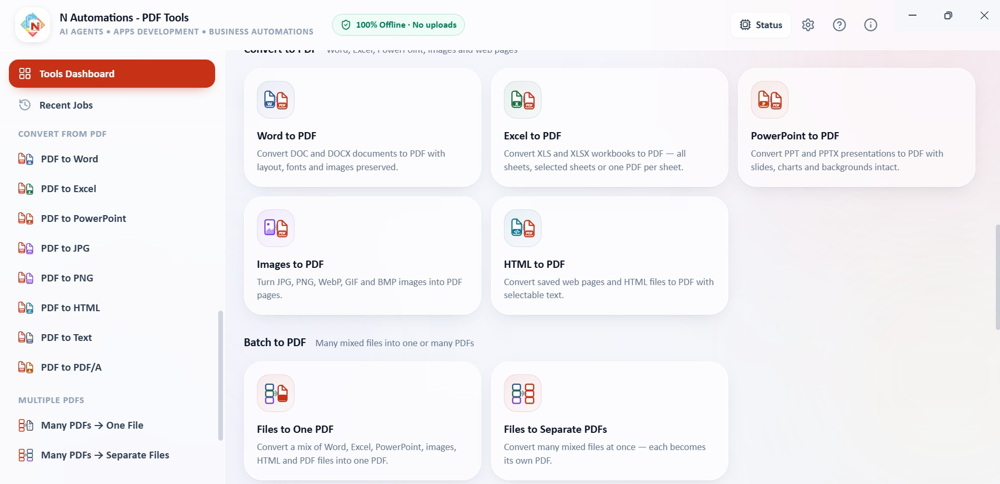
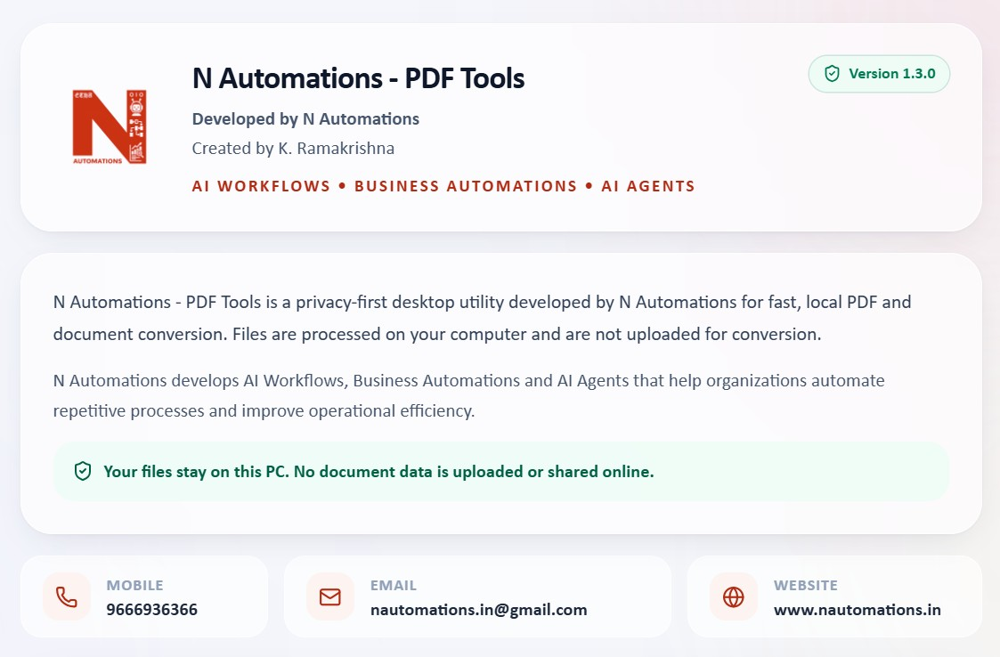

We build custom web, desktop and offline applications for pharmaceutical companies, engineering teams and industrial operations — shaped around your real process, not a generic template.

A complete offline PDF toolkit for Windows. 29 tools to organise, optimise and convert documents — every conversion runs on your PC, with no account, no uploads and no internet needed.



Windows installer · 216 MB
Free to use · about 900 MB disk space · installs for the current user, no administrator password needed. The installer is not code-signed yet, so Windows SmartScreen may ask you to confirm: More info → Run anyway.
From a single-purpose calculator to a department-wide system — each application starts from your process, your documents and your constraints.
Internal business apps, portals, CRMs and dashboards your team opens in a browser.
Installable applications for engineering, documentation and office PCs.
Applications that run on the local machine or local network without depending on the internet.
Customer-specific automation software for enquiries, approvals, documents and reporting.

In many pharma plants, labs and engineering offices, PCs are locked down or kept off the internet. We design applications for local use in these environments — installed on the machine or the internal network, with data kept where your IT policy requires it.

Tools for the work that usually lives in spreadsheets and folders — sizing and calculation tools, quotation and project trackers, document generators, and reporting dashboards for management.
A personalised app can stand alone, or connect to AI agents, workflows and your existing systems when the process needs it.
Your calculations, rules and approval steps coded into the application.
Local or hosted databases with structured records, backups and reports.
Optional AI assistance and MCP / API connections to CRM, email and other systems.
Desktop, browser and mobile access where your environment allows it.